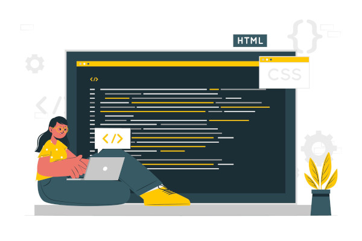

Meu nome é Luiz Gustavo Lendimuth Araujo Augusto e tenho 40 anos bem vividos.
Sou Brasileiro, nascido em São Paulo Capital, mas no momento estou morando em Juiz de Fora em Minas Gerais.
Sou Designer Gráfico com 20 anos de experiência, com muita bagagem, mas pronto para novidades.
Sou curioso, gosto de inovar e de um bom desafio. Gosto de aprender e aprendo rápido.
Trabalho muito bem em equipe e mantenho um ótimo relacionamento com meus colegas de trabalho.
Este ano decidi fazer uma transição de carreira, então comecei a fazer o curso de Desenvolvimento Web na Trybe, para dar início a minha jornada como DEV.